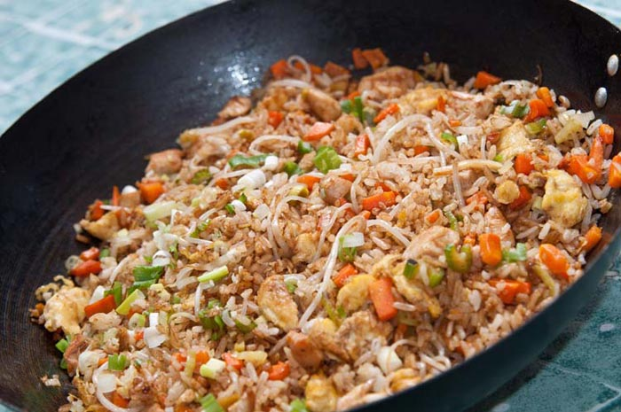
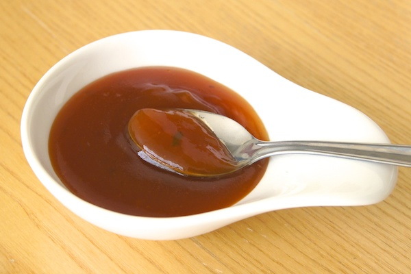
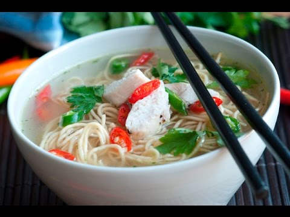

Hola bienvenidos al menu de platillos de China.
Platillo |
Imagen |
Informacion |
| 1-Arroz chino. |
 | El arroz es un ingrediente fundamental en la comida típica de china, es la guarnición perfecta para cualquier plato y puedes prepararlo con distintos ingredientes para darle más sabor. Intenta hacer este exquisito arroz chino.
|
|  |
El condimento más popular en la gastronomía china y replicado en todo el mundo es la deliciosa salsa agridulce. Ideal para condimentar la carne y además combina muy bien con otros sabores como con vegetales o cualquier tipo de comida, intenta hacerla y verás cuán deliciosa es. |
|
|
3-Sopa china.
|
 | En la cultura oriental, la costumbre es tomar la sopa luego del plato principal para, de esta manera saciar el hambre de los comensales. Esta receta de sopa china puedes comerla luego del plato principal imitando la cultura de la cual proviene, o bien puedes comerla antes del mismo, de cualquier manera es deliciosa. |